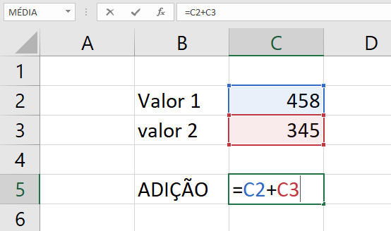

O Excel se destaca por recalcular automaticamente os resultados quando algum valor muda. Esse recurso torna a planilha muito mais dinâmica e útil.

Uma planilha estática é aquela em que os valores são fixos — como uma foto. Uma planilha dinâmica é aquela em que os valores se recalculam automaticamente sempre que algo muda. Essa é, sem exagero, a característica mais importante de todo o Excel.
Quando você escreve uma fórmula que faz referência a outra célula, você não está apenas calculando um resultado — está criando uma conexão. Se o valor de origem mudar, o resultado muda junto, sem que você precise refazer nada.
Curiosidade: Esse conceito de recalcular tudo automaticamente é chamado tecnicamente de motor de cálculo.
Toda fórmula no Excel começa com o sinal de igual (=). É esse sinal que avisa ao programa: "o que vem depois não é texto, é um cálculo".
=A1+A2=A1-A2=A1*A2=A1/A2=A1^2O Excel segue a mesma ordem matemática que aprendemos na escola — conhecida pela sigla PEMDAS.
Dica: Clique na célula vazia onde quer o resultado, digite
=e depois clique diretamente nas células que quer somar, subtrair ou multiplicar.
Um dos recursos mais usados do Excel é a alça de preenchimento — aquele quadradinho no canto inferior direito da célula selecionada, que permite arrastar uma fórmula para as células vizinhas.
Por padrão, o Excel usa referência relativa, então ao arrastar a fórmula
=A1+B1 para a linha de baixo, ela se ajusta automaticamente para =A2+B2.
Já a referência absoluta, marcada com cifrão como $A$1, permanece fixa
mesmo quando a fórmula é arrastada.
Dica: A tecla F4 alterna entre referência relativa e absoluta sem precisar digitar o cifrão manualmente.